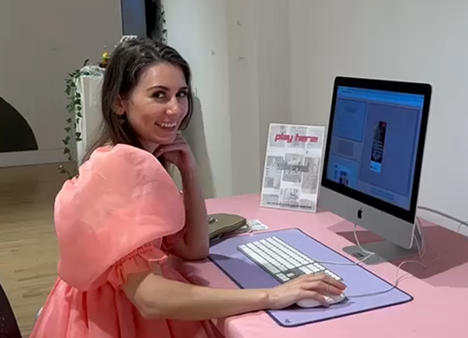

Mary Reed is a New York City-based artist, writer, and arts educator. Born in Long Island, New York and raised in rural Tennessee, she developed her artistic practices in sewing, web coding, journaling, and collage throughout her childhood and adolescence. She taught herself HTML at age 12 and produced the first issue of the zine heartshaped at age 17.
Mary holds a bachelor's degree in Fashion Design from the Savannah College of Art and Design and a master's in Art Education from the School of Visual Arts. She is certified to teach K-12 Visual Art in New York State.
© 2026 Mary Reed